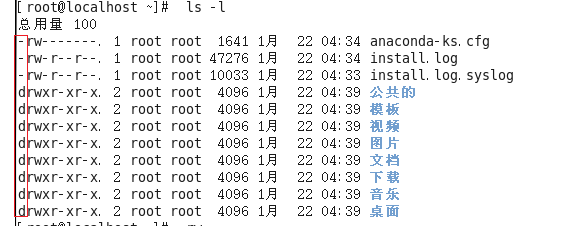
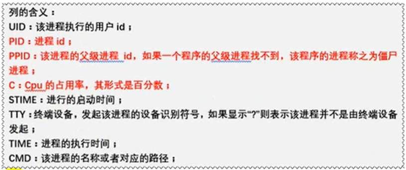
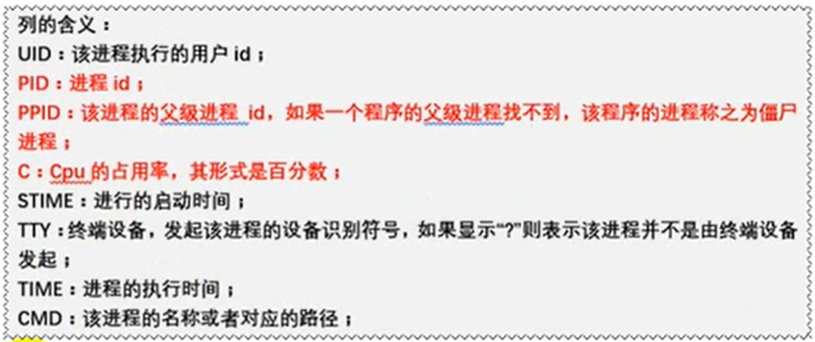
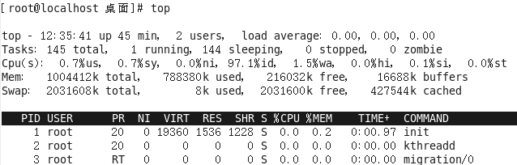
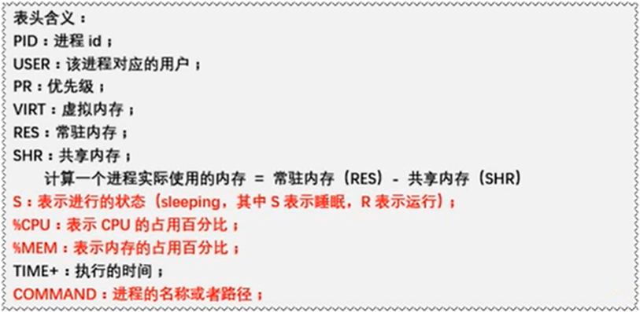

一个完整的指令的标准格式
#指令主体[选项][操作对象]
linux命令手册： https://man.linuxde.net/date
基本指令
-
ls:
- 用法一：ls 列出当前目录下的所有文件，文件夹的名称
-
用法二: ls 路径，表示打开指定路径下的所有文件，文件夹
-
相对路径：需要一个参照物(一般是当前工程)
- 路径写法： './'[当前目录], '../'[上一级目录]
- 绝对路径：从根目录开始找
-
相对路径：需要一个参照物(一般是当前工程)
-
用法三: ls 选项 路径， 表示在指定路径下寻找指定文件以指定的格式显示
-
常见语法：
- ls -l 路径: 以列表的形式显示所有的文件/文件夹
- ls -la路径: 显示所有的文件/文件(包括隐藏的文件/文件夹) 
-
常见语法：
红线框起来的第一列表示文件的类型，'-'表示是文件， 'd'表示是文件夹，linux中以.开头的都是隐藏文件
- 用法四: ls -lh(-lah) 路径， 表示指定路径下的指定文件的大小以较高可读性显示
- 补充：切换输入法，ctrl + 空格
-
pwd:(print working directory)，表示打印当前工作目录的绝对路径
-
cd:(change direectory, 改变目录)，
- 用法： cd 路径(只写路径代表绝对和相对路径都支持)
- cd ~:这个命令直接切换到当前用户的家目录(root目录)
-
mkdir:(make directory, 创建目录)，
- 语法一：mkdir 路径(路径可以包含文件夹名称)
-

- 蓝色代表文件夹，黑色代表文件， 绿色代表所有权限都有
- 语法二: mkdir -p 路径:假如要在root目录下创建一个文件夹，mkdir /root/a/b/c,此时root中不包含a，b，c文件夹，使用mkdir 路径创建不了，加个-p就可以了，这个命令可以一次创建多个不存在的文件夹
-
touch:创建文件
- 语法： touch 文件路径 或者 touch 文件路径1 文件路径2
-
cp:
- 语法: cp 被复制的文件路径 复制到的文件的路径, linux复制的时候可以改名，windows不可以(一般不推荐)
-
使用cp命令复制文件夹的时候需要在后面加-r，否则，要复制的文件夹会被忽略， cp -r 路径 路径
- -r表示递归复制
-
mv:(move，移动)相当于windows里的剪切
- 语法： mv 被剪切的文档路径 剪切到的文档路径
-
rm：(删除文件或文件夹)
- 删除文件： rm -f 路径下的文件, 如果不想输入y，可以在后面加-f(force:强制)，强制删除
- 删除文件夹： rm -rf 路径下的文件也是递归删除，可以删除文件夹且不需要确认
-
删除多个文档： rm -rf 要删除的路径1 要删除的路径2
- 简写： rm -rf 路径/linux*： *表示通配符，删除路径下所有linux开头的文档
-
vim:用来打开文件
- 语法： vim 文件路径
- 退出的方法： 在没有按其他键的情况下，shift+:， 然后输入 q 回车
-
> or >>(输出重定向) 例如： ls -ah > 要输出到的路径，文件可以不存在，不存在则自动新建
- >:这个是覆盖输出，就是会覆盖文件原来的内容
- >>:这个是追加输出， 在文件内容的末尾继续添加
-
cat：
- 语法： cat 要打开的文件路径 ，类似vim命令，会直接打开文件并退回到命令行
- 作用二： 合并文件，cat 待合并路径1 待合并路径2 ...待合并路径n > or >> 要合并的路径把两个文件和成一个文件
进阶指令
-
df：查看磁盘分区
- 语法： df -h
-

- filesystem: 文件系统
- size： 大小
- used： 使用情况
- avail： 总共多大
- use%：使用百分比
- mounted on： 挂载在哪里
-
free：查看磁盘使用情况
- 语法： free -m:(-m表示以m为单位计算大小，不写-m则默认是以kb来计算，也可以使用-g)
-

- 要看第二行，free是可用内存，真是可用内存为439
- swap是临时内存
-
head:作用是查看某个文件的前n行
- 语法： head -n 文件路径(-n中的n必须是数字)
-
tail:作用是查看某个文件的后n行
- 语法1： tail -n 文件路径(-n中的n必须是数字)
-
语法2： tail -f 文件路径
- 作用是实时监控文件的动态变化
-
less：查看文件，以较少的内容进行输出，按下辅助功能键(数字+回车，空格键+上下左右方向键)查看更多
- 语法： less 文件路径
-
wc:用来统计(行数， 单词数， 字节数)
- wc -l 要统计的文件路径(统计行数-l:lines)
- wc -w 要统计的文件路径(统计单词数-w:words)
- wc -c 要统计的文件路径(统计字节数-c:bytes)
- 直接 wc 要统计的路径: aaa bbb ccc 路径名(aaa是行数，bbb是单词数， ccc是字节数)
-
date(重点)：用来读取或设置时间
-
获取当前时间
- 语法一： date-------------- 输出： 2019年2月12日 星期六 20：12：12
- 语法二: date +%F(一定要写+号，F必须大写，等价于date +%Y-%m-%d) ---------------输出： 20：12：12
- 语法三： date "+%F %T"(等价于date "+%Y-%m-%d %H:%M：%S") 输出结果： 2020-12-12 12：12：12
-
获取之前或者之后的时间点
- 语法四： date -d "-1 day" "-%F" 输出： 2020-02-05(当前日期为2020-02-06)数字为正就是往后几天
-
获取当前时间
-
cal：用来操作日历
- 语法一： cal 输出当前月份的日历
- 语法二： cal -3 输出当前月份的前一个月份， 当前月份， 当前月份的后一个月份
- 语法三： cal -y 2020 输出指定年份的全部日历
- clear or ctrl + L:清空终端(并不是真的清除)
-
管道(重点):管道符：|, 管道符一般用于过滤，特殊， 扩展处理
- 过滤案例： 输出根目录下带y的文档，ls /|grep y(grep是过滤指令)
- 扩展案例： 使用wc指令统计根目录下有多少个文件， ls /| wc -l
高级指令
-
hostname:读取，设置主机名
- 语法一： hostname 输出的是完整的主机名
- 语法二： hostname -f 输出的是主机名中的FQDN(全限定域名)
-
id：
- 语法一： id 输出

- 语法二： id 用户名，是输出指定用户名的信息

- uid是用户id， gid是用户组， 组就是附加组
- 验证用户信息： /etc/passwd
- 验证用户组信息： /etc/group
-
whoami:(“我是谁”指令),作用是显示当前登录的用户
- 语法一： whoami 输出结果： root
-
ps -ef:作用是查看服务器进程
- -e(等价于-A)代表是查看全部进程，-f是显示进程的全字段(就是显示所有列)
 
 - 案例：在结果中过滤要找的， 命令：ps -ef|grep 进程名
- -e(等价于-A)代表是查看全部进程，-f是显示进程的全字段(就是显示所有列)
-
top：作用是查看服务器进程占用的资源
- 语法： top，按q键退出
 
- M:在top命令下按M键，根据MEM排序
- P:在top命令下按P键，根据%CPU排序
- 1:默认显示一个cpu，按1显示所有cpu的使用情况
-
du -sh:作用是查看目录的真实大小
- 语法： du -sh 目录路径
- -s:是代表显示汇总的数量，-h：是代表以kb，mb，或者gb来统计
-
find： 作用是查找
- 语法： find 查找范围路径 选项 选项的值
-
选项L:
- -name：根据文档的名称来查(支持模糊查询)
- -type：有两种类型- or d, -代表文件(在这里用f表示)，d代表文件夹
-
service(重点)：作用是控制一些软件服务的启动/停止/重启
- 语法： service 服务名 start/stop/restart
-
kill:杀死进程
- 语法一： kill 进程PID
- 语法二： killall 进程名
-
ifconfig(重点)：获取网卡信息
- 语法： ifconfig
-
reboot:重启计算机
- 语法一： reboot
- 语法二： reboot -w(模拟重启，但是不重启，在日志中 记录重启但是实际没有重启)
-
shutdown：关机
- 语法一： showdown -h now "关机提示语" 或者 shutdown -h 21:26 "关机提示语"(在21:26将会关机，定时关机)
-
类似的关机命令
- init0
- halt
- poweroff
-
uptime：输出持续在线时间(从开启到现在有多久)
- 语法： uptime
-
uname:获取计算机系统信息
- 语法一： uname ，输出Linux，是获取操作系统的名称
- 语法二： uname -a 输出的是操作系统的信息
-
netstat -tnlp：查看网络的来链接状态
- 语法： netstat -tnlp
-
选项：
- -t:只显示tcp协议的
- -n:把地址转换成ip地址+端口号
- -l:只显示listen状态的
- -p:显示PID和进程名
-
man：(linux中所有命令的手册，全称是manual，手册的意思)
- 语法 man 命令名， 退出按q
练习
- 重启虚拟机： reboot
- 在命令行中快速删除光标前/后的内容： CTRL+u，ctrl+L
- 删除tmp下以A开头的文件： rm -f /tmp/A*
- 把/etc/passwd备份到/tmp下：cp /etc/passwd /tmp
- 查看系统最后创建的三个用户：tail -3 /etc/passwd
- 统计当前有多少账户：wc -l /etc/passwd
- 创建/tmp/test.conf文件：touch /tmp/test.conf
- 如何通过vim打开test.conf文件：vim test.conf
- 如何查看/etc/passwd的前三行和后三行：head -3 /etc/passwd ，tail -3 /etc/passwd
- 如何一次性创建目录/root/1/2/3：mkdir -p /root/1/2/3
- 最快返回当前用户的家目录：cd ~
- 如何查看/etc占用的磁盘空间：du -sh /etc
- 删除/etc下所有的文件： rm -ef /etc/*
- 启动apache服务：service httpd start
- 杀死apache进程： kill httpd